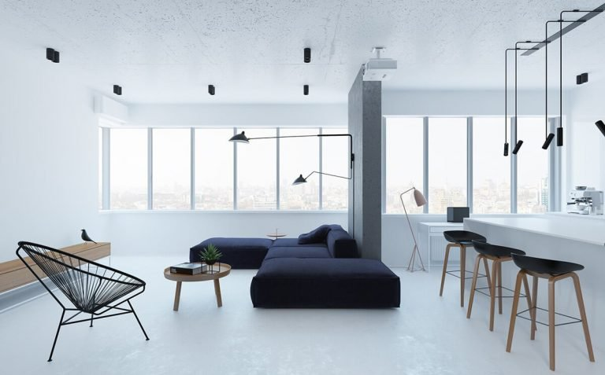
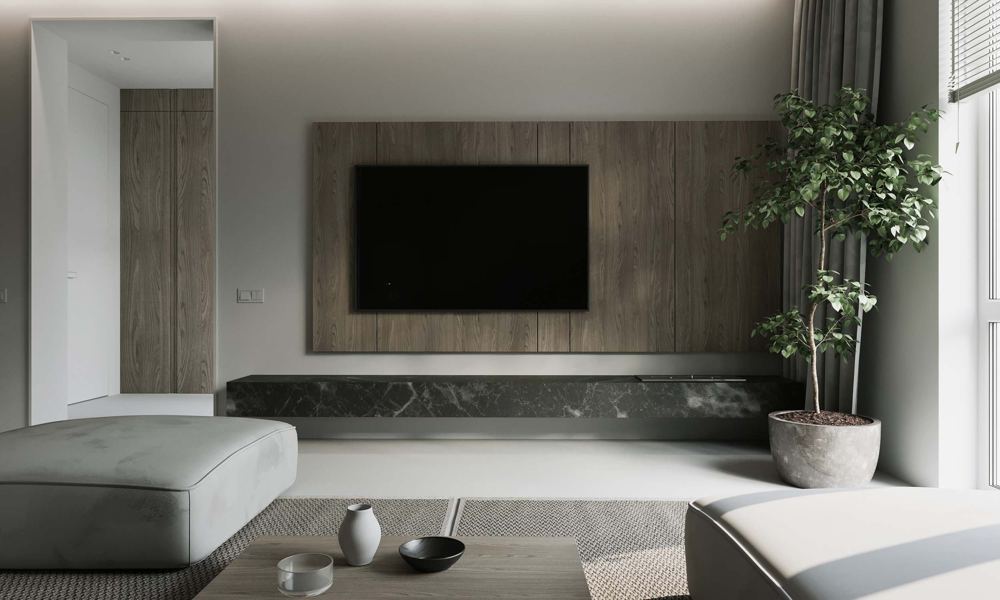
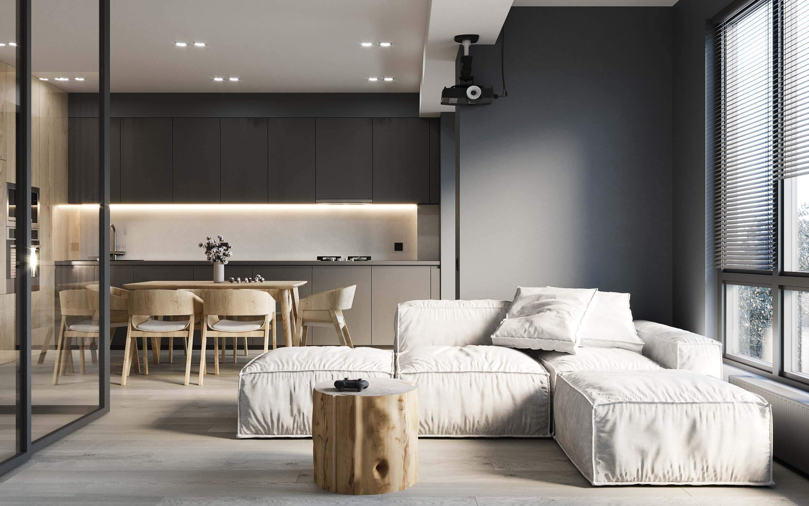
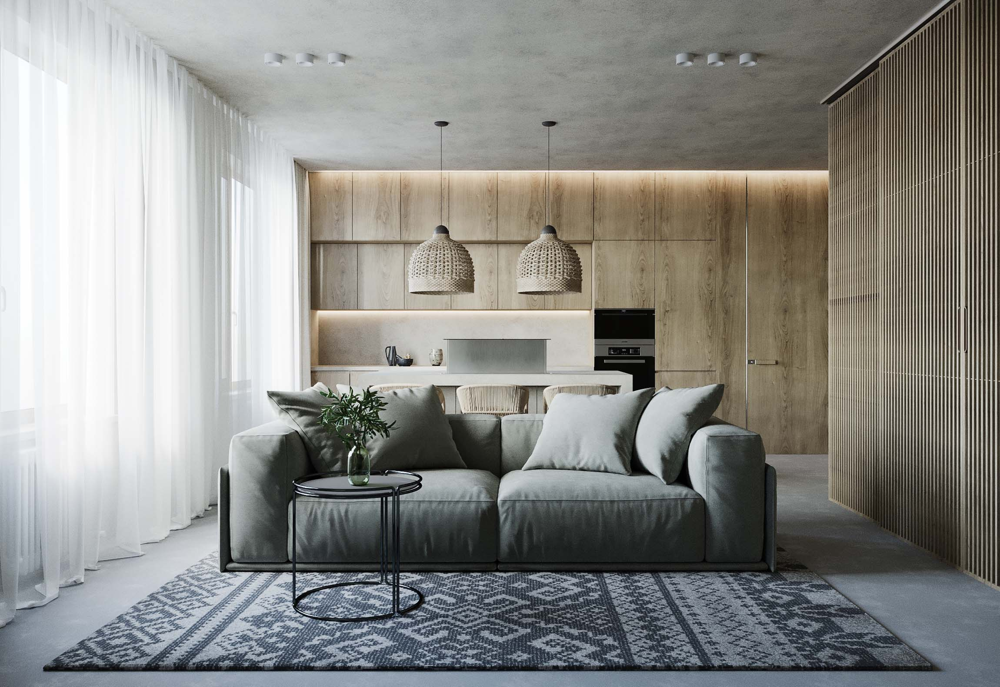
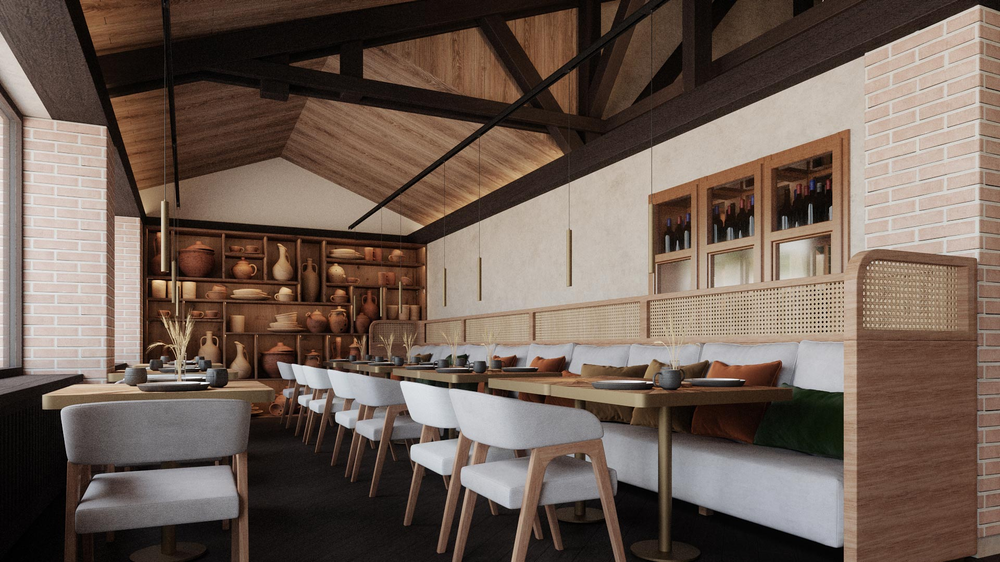
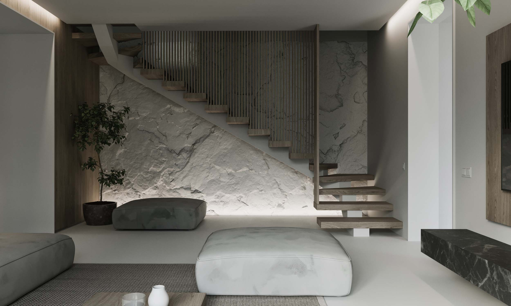
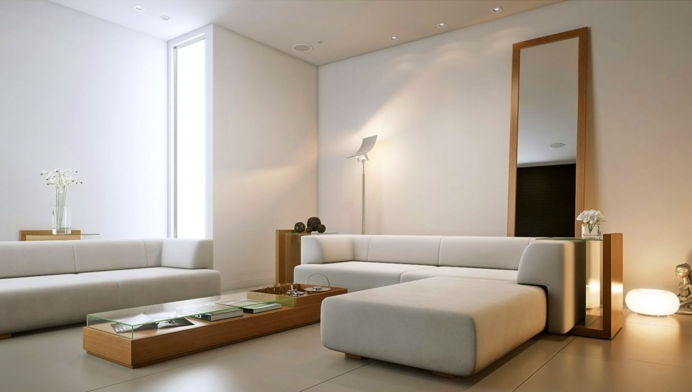

Stilul Minimalist
Asociat cu celebra sintagma atribuita arhitectului si designerului Mies van der Rohe, „Less is more”, minimalismul este un curent estetic in aparenta auster, in care accentul este pus pe puritatea formelor si simplitatea liniilor.
Apărut in anii ’60 ca o reactie la surplusul de culoare si detalii caracteristice formelor precedente de arta, fenomenul minimalismului a inceput sa ia cu adevarat amploare un deceniu mai tarziu. In prezent, acest stil nu se aplica doar in designul interior sau in moda, ci a devenit chiar un stil de viata, promovat intens in toata lumea de doi autori americani: Joshua Fields Millburn si Ryan Nicodemus.
Mimimalismul incurajeaza oamenii sa elimine tot ceea ce este de prisos din viata lor, pentru a face loc unor aspecte mult mai importante: sanatatea, dezvoltarea personala, calitatea relatiilor si responsabilitatea sociala.
De cele mai multe ori, aceasta provocare incepe in propria casa. Nu sunt vizate doar obiectele inghesuite in dulapuri, care stau nefolosite de ani de zile, ci si piesele de mobilier si, in general, atmosfera fiecarei incaperi. Minimalismul in designul interior se bazeaza pe cateva scheme cromatice specifice si pe un decor structurat cu totul altfel fata de cel traditional.
Vei gasi in acest articol tot ce trebuie sa stii inainte sa incepi sa-ti amenajezi casa in stil minimalist, fie ca vrei sa integrezi principiile acestui curent in viata ta de zi cu zi, fie ca iti plac, pur si simplu, spatiile aerisite, confortabile, functionale si elegante.
Cele mai importante reguli ale stilului minimalist in designul interior
La prima vedere, ai putea crede ca un decor minimalist e foarte usor de obtinut. Nu trebuie decat sa elimini ornamentele, combinatiile de culori si aglomerarile de obiecte, nu-i asa? Lucrurile stau putin altfel, pentru ca, atunci cand amenajam o incapere in stilul minimalist, nu trebuie sa obtinem un spatiu sobru, saracacios si banal, ci unul perfect functional, care sa inspire calm si claritate.
Iata care sunt cele mai importante reguli pe care ar trebui sa le ai in vedere:
- Creeaza spatii deschise oriunde ai posibilitatea si evita peretii despartitori care nu au un rol important in compartimentarea casei. Bucataria open space, care include sufrageria si camera de zi, uneori si holul, fluidizeaza traficul din casa, mareste vizual spatiul si faciliteaza interactiunea sociala, dar are si cateva dezavantaje, precum absenta intimitatii.
- Asigura suficienta lumina naturala in fiecare incapere, pentru o atmosfera cat mai calda. 
- Opteaza pentru un aspect unitar in tot apartamentul. Foloseste o gama restransa de materiale si culori si pastreaza continuitatea dintr-o incapere in alta.
- Adauga personalitate caminului tau cu ajutorul finisajelor pentru tavan, pereti si podea, dar cu masura. Ideal este sa pastrezi majoritatea suprafetelor cat mai simple si sa accentuezi doar cateva cu ajutorul materialelor texturate.
- Uita de baghetele si casetele decorative din polistiren pentru tavan si pereti, de dulapurile bogat ornamentate si de mobilierul cu picioare arcuite. Fiecare element din decor trebuie sa fie simplificat. 
- Foloseste nuante neutre sau deschise pentru pereti si asigura-te ca punctul central al incaperii este reprezentat de ferestre (atunci cand privelistea este una agreabila, bineinteles).
- Alege piese de mobilier cu functii multiple si asaza-le strategic, fara sa le inghesui in incapere.
- Mizeaza pe spatiile de depozitare pentru a elimina din decor surplusul de accesorii.
- Pastreaza ordinea, nu lasa sa se aglomereze prea multe lucruri in incapere si gandeste-te bine de fiecare data cand vrei sa achizitionezi o piesa de mobilier sau o decoratiune: ai cu adevarat nevoie de ea sau vrei doar sa o expui?
Culorile stilului minimalist
Alb, negru si gri
In versiunea sa cea mai dogmatica, minimalismul presupune monocromie absoluta la nivelul peretilor, tavanului si podelelor, contrastul fiind obtinut subtil cu ajutorul mobilierului si accesoriilor. De o eleganta desavarsita, combinatia contrastanta dintre alb si negru reprezinta, practic, cea mai pura expresie a minimalismului.
Albul reflecta lumina si induce o stare de relaxare, iar negrul, prezent mai mult in elementele mobile de decor si mai putin in cele fixe, cu suprafete mari (peretii, podeaua, tavanul) ii adauga o nota de sofisticare. Griul, rezultat din amestecul albului cu negru, completeaza un decor minimalist par excellence, paleta sa bogata de nuante (gri luminos, gri argintiu, gri cenusiu, gri petrol, gri taupe, gri albastrui, etc.) aducand diversitate incaperii fara sa-i afecteze armonia cromatica. Intr-o astfel de schema cromatica poti adauga, pentru un efect spectaculos, un detaliu intr-o nuanta intensa, vie, de rosu, orange sau galben.
Combinatii intre alb si o culoare intensa
Ca sa energizezi spatiul fara sa pierzi ceva din puritatea si simplitatea stilului minimalist, poti combina albul cu o culoare precum rosu, verde, albastru sau orange. Cu cat nuantele sunt mai intense, cu atat vor lumina mai mult incaperea, iar cu cat sunt mai pale, cu atat atmosfera va fi mai primitoare si relaxanta.
Si in cazul acesta, recomandarea este sa pastrezi tavanul si peretii albi si sa adaugi culoare doar prin intermediul unui mobilier cat mai simplu. Poti obtine un contrast incantator, de exemplu, daca pe un perete alb asezi o biblioteca tot alba, dar in fata acesteia plasezi o canapea intr-o nuanta intensa de rosu sau verde.
Retine ca o incapere minimalista decorata in rosu si alb creeaza o atmosfera plina de vitalitate, combinatia de alb si verde este mai relaxanta iar mixul de alb si portocaliu orange insufla prospetime si dinamism ambiantei.
Combinatii de culori stralucitoare
Mai potrivite in incaperile de tranzit, in bucatarii sau in camerele destinate copiilor, combinatiile stimulante de culori stralucitoare pot fi folosite cu succes in stilul minimalist, atata vreme cat urmezi cateva sfaturi:
- Combina mai multe nuante ale aceleiasi culori pentru a fi sigur ca nu afectezi armonia cromatica din incapere. 
- Combina nuante proaspete de verde, galben sau lime cu negru, pentru o atmosfera moderna si casual.
- Atata vreme cat suprafetele sunt simple, iar mobilierul are un design geometric, fara ornamente, poti folosi si nuante de roz pal pentru pereti.
- Foloseste culori complementare (cele situate diametral opus pe roata culorilor) pentru a obtine un contrast puternic si dinamic. De exemplu, o bucatarie cu pereti portocalii si dulapuri sau scaune simple, albastre, cu linii drepte si design geometric, poate fi considerata o bucatarie minimalista.
3 idei practice pentru un decor minimalist
- Mizeaza pe obiectele de mobilier multifunctionale
Orice incapere trebuie sa-si indeplineasca functia cat mai bine. Daca intr-un living nu te poti relaxa alaturi de prieteni si familie pentru ca nu ai suficiente locuri, inseamna ca livingul respectiv nu este folosit la capacitate maxima si nu respecta in niciun caz principiile stilului minimalist. La fel si in cazul unei bucatarii prost configurate, in care cel care gateste este obligat sa faca pasi suplimentari, pentru ca zonele de lucru nu formeaza un triunghi optim de lucru.
De fiecare data cand un obiect de mobilier nu este folosit timp de una sau doua luni, trebuie sa te intrebi daca ai cu adevarat nevoie de el si daca nu cumva ar fi mai eficient sa-l inlocuiesti cu unul cu functie dubla. De exemplu, o bancheta simpla pe care se aduna praful luni de zile, fara sa se aseze nimeni pe ea, poate fi inlocuita cu o bancheta cu spatiu de depozitare.
- Concepe un sistem personal de organizare
Minimalismul nu-ti da voie sa fii dezordonat. Asta inseamna ca vei spune adio meselor pe care se aduna tot felul de lucruri inutile, care vor fi candva aruncate pur si simplu la gunoi, firelor care serpuiesc inestetic pe podea si mormanului de haine asezat pe un scaun, ca sa-ti fie la indemana. Odata ce elimini aglomerarile de obiecte din campul vizual si toate lucrurile neesentiale, iti va fi mult mai usor sa faci ordine si in alte aspecte ale vietii tale.
La inceput, insa, trebuie sa-ti pui la punct un sistem personal de organizare. Fii ingenios si foloseste orice suprafata ascunsa vederii, de exemplu, partea interioara a usilor dulapurilor din bucatarie, montand pe acestea diverse suporturi. Intr-o baie mica, dulapurile verticale sunt mai adecvate acestui stil, in locul etajerelor care lasa cosmeticele si alte obiecte la vedere, iar in acestea poti aseza organizatoare speciale pentru sertare.
Pentru dormitor, opteaza pentru un pat care dispune de cat mai mult spatiu de depozitare. Patul cu doua sau trei sertare in loc de unul singur iti va permite sa depozitezi la indemana atat lenjeriile, cuverturile, cat si pernele si pilotele.
Daca masuta de cafea este sufocata de reviste, coastere si mici suveniruri, verifica mai intai daca toate iti sunt necesare sau ai putea elimina cateva dintre ele. Cele care raman pot fi depozitate pe o tava sau intr-o cutie din lemn care sa se integreze frumos in decor.
- Alege piese durabile, rezistente
Atunci cand esti nevoit sa-ti decorezi casa cu putine elemente de mobilier, vei observa ca o sa acorzi mai mult timp alegerii celor cu adevarat utile, estetice, care se armonizeaza atat cu restul amenajarii, cat si cu gusturile tale. In acest caz, este mult mai eficient sa investesti in obiecte durabile si rezistente, in detrimentul celor trendy.
Nu uita ca minimalismul este un stil de amenajare extrem de personal si nu exista retete sigure care sa fie adecvate in orice situatie. Minimalismul raspunde direct nevoilor tale, nu ultimelor tendinte din designul interior.
Culorile stilului minimalist
Iata cateva dintre greselile pe care le poti face cand iti amenajezi caminul in stil minimalist:
- Decorezi ferestrele cu perdele cu imprimeuri si/sau draperii opulente.
Tine minte ca fereastra este foarte importanta in acest tip de amenajare, pentru ca trebuie sa permita luminii naturale sa intre cat mai libera in incapere. Opteaza, in schimb, fie pentru perdele simple, transparente, fie pentru jaluzele sau storuri.
- Decorezi peretii cu tablouri si alte obiecte de arta.
Teoretic, obiectele decorative precum tablourile nu-si au locul in incaperile minimaliste, dar trebuie sa recunoastem ca peretii albi si goi pot fi prea intimidanti si sobri. Alege, in locul reproducerilor dupa tablouri clasice, niste piese cat mai simple, cu modele abstracte sau inspirate din natura, dar in culori neutre. De exemplu, un tablou cu o pasare neagra pe fundal alb adauga personalitate atmosferei si se incadreaza in stil datorita simplitatii elementelor si contrastului puternic dintre culorile neutre.
- Nu variezi texturile.
Chiar daca ai vazut o multime de imagini cu livinguri sau dormitoare minimaliste ale caror podele straluceau de curatenie si nu erau acoperite nici de mocheta, nici de covor, sa stii ca, de fapt, este chiar recomandat sa alternezi texturile suprafetelor. Un covor mai mic sau mai mare, in functie de rolul sau si de dimensiunea camerei, in culori neutre, va spori confortul incaperii facand-o chiar mai primitoare.
De asemenea, atunci cand optezi pentru monocromie, o idee buna este sa optezi pentru mai multe tipuri de materiale in aceeasi culoare. De exemplu, o masa din lemn negru, alaturi de o canapea cu tapiterie din piele neagra, pe care ai asezat una sau doua perne din satin negru, vor imbogati decorul fara sa-l aglomereze vizual.
- Asezi mobilier in dreptul ferestrelor si nu creezi culoare de trecere.
Pentru ca functionalitatea primeaza in stilul minimalist, trebuie sa te asiguri ca punctul central al incaperii -fereastra, in acest caz – nu este obstructionat. De asemenea, traficul in incapere nu trebuie impiedicat de niciun obiect de mobilier. Asaza fiecare piesa in asa fel incat sa pastrezi fluiditatea si echilibrul spatiului.
- Atarni de tavan corpuri de iluminat voluminoase.
La fel ca restul incaperii minimaliste, si tavanul trebuie sa fie cat mai simplu, fara sa adauge dramatism atmosferei, asa cum face, de exemplu, un candelabru somptuos. Opteaza pentru lustre suple, cu linii drepte, cum ar fi un fir de care atarna un bec intr-o structura in forma de cub.
Chiar daca primii pasi ai procesului de amenajare in stil minimalist (ne referim aici la eliminarea surplusului si organizarea obiectelor esentiale) iti pot parea dificil de parcurs, trebuie sa stii ca acesta este, poate, cel mai practic stil de design interior.
Odata pus la punct, avantajele sale sporesc confortul caminului si iti simplifica viata, punandu-ti la dispozitie timpul necesar pentru a te ocupa de pasiunile tale si pentru a-ti imbunatati relatia cu ritmul alert al societatii moderne.